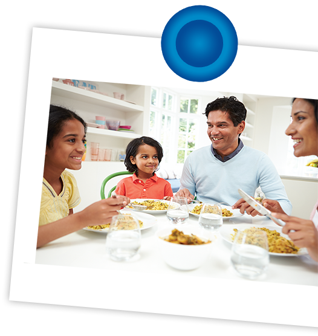

Food is anything edible, which when swallowed, digested and assimilated, nourishes our body.
Why do we need food?
To obtain energy and nutrients required for growth, maintenance and performance.
For protection against diseases
To have a healthy & active lifestyle
To satisfy hunger or thirst
For socializing
For pleasure and to satisfy our senses.

What is nutrition?
Nutrition is the science of food in its relationship to heath. It is the process by which an organism ingests, digests, absorbs, transports and utilizes nutrients and disposes of their end product and all complications occurring in the body due to inadequate, excess or imbalance intake of nutrients.